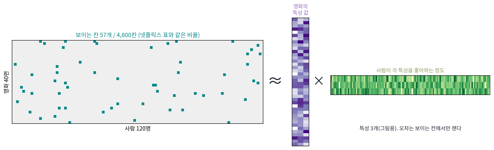
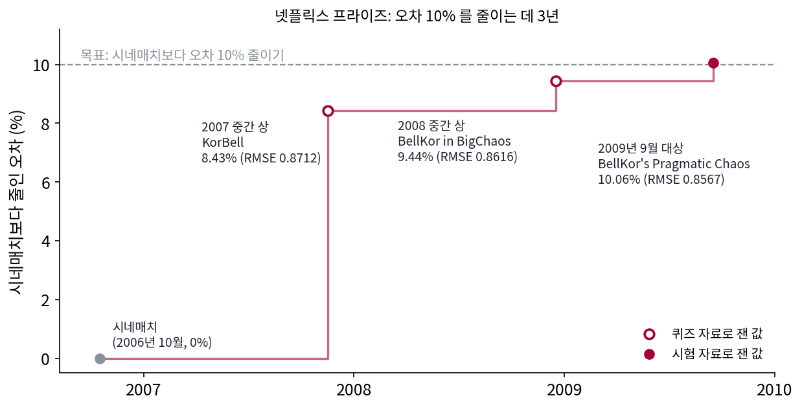
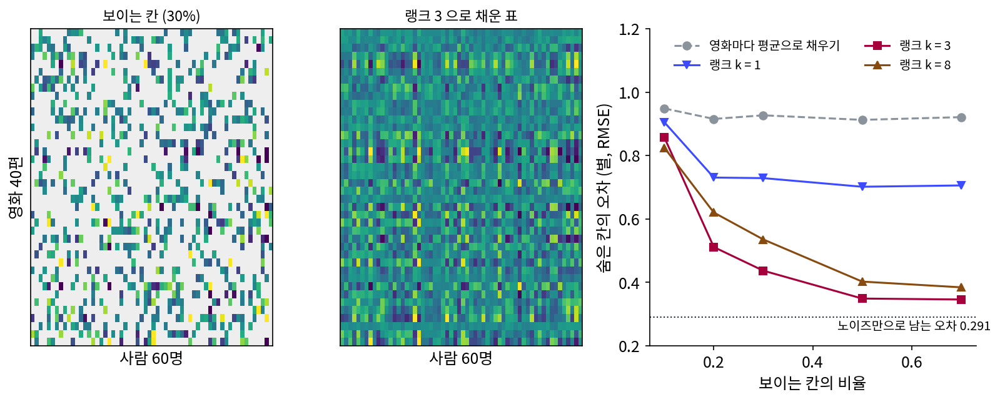
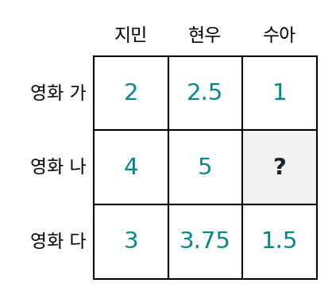
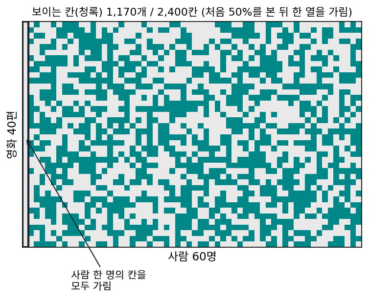
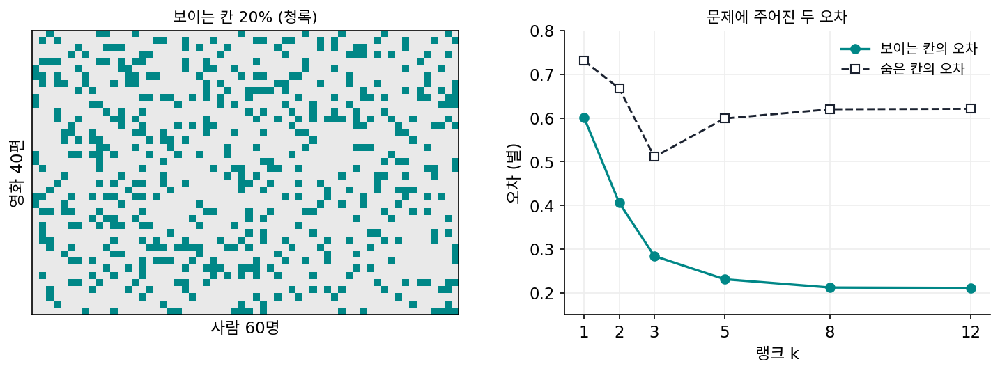

행렬 채우기: 빈칸이 많은 표를 낮은 랭크로 채운다
영화 별점 표를 생각해 보자. 가로줄은 영화, 세로줄은 사람이다. 넷플릭스가 2006년에 공개한 자료는 영화 17,770편과 사람 480,189명의 표였는데, 85억 칸 가운데 별점이 적힌 칸은 약 1억 개, 1.18%뿐이었고, 사람 한 명이 별점을 준 영화는 평균 209편이었다. 추천이란 빈칸에 들어갈 별점을 맞히는 일인데, 지금까지의 주성분 분석은 표가 가득 차 있어야 평균을 빼고 공분산을 잴 수 있었다. 칸의 99%가 빈 표에서도 「사람들의 취향은 몇 가지 축의 조합이다」라는 낮은 랭크의 가정을 쓸 수 있을까?
역사: 백만 달러와 20분
2006년 10월 2일 넷플릭스는 자기 회사의 추천 알고리즘 시네매치(Cinematch)보다 별점 예측 오차(제곱근 평균 제곱 오차, RMSE)를 10% 줄이는 팀에게 100만 달러를 주겠다고 발표했다. 시네매치의 시험 오차는 0.9525였으니 목표는 약 0.857이었고, 학습 자료는 1부터 5까지의 정수 별점 100,480,507개였다.
석 달이 채 지나지 않은 2006년 12월 11일, 사이먼 펑크(Simon Funk, 블로그에서 쓴 이름)가 「넷플릭스 소식: 집에서 해 보세요(Netflix Update: Try This at Home)」라는 글을 올렸다. 영화마다 몇십 개의 숨은 특성 값을, 사람마다 그 특성을 좋아하는 정도를 두고 별점을 둘의 곱의 합으로 맞히되, 빈칸은 무시하고 별점이 있는 칸의 오차만 경사하강으로 줄이는 방법이었다. 특성은 하나씩 차례로 배웠고, 특성 값이 너무 커지지 않게 작은 페널티를 주었다. 그는 이 방법으로 순위표에서 공동 3위에 올랐다고 적으면서도, 그 제출은 다른 팀의 결과와 섞은 것이라 이 방법만으로는 9위쯤이었다고 덧붙였다. 전체 표의 특잇값 분해는 빈칸 때문에 할 수 없었지만, 낮은 랭크라는 생각만 빌려 보이는 칸에서 직접 배운 것이다. 그 뒤 상위 팀들이 여러 모델을 섞어 만든 예측기에도 이런 특잇값 분해 계열의 행렬 분해가 들어 있었다.

대회는 3년을 끌었다. 2007년과 2008년의 중간 상을 거쳐, 2009년 9월 21일 여러 팀이 합친 「BellKor’s Pragmatic Chaos」가 시험 오차 0.8567, 10.06% 개선으로 상금을 받았다. 다른 연합 팀 「The Ensemble」도 같은 점수를 냈지만 BellKor 쪽이 20분 먼저 제출해 이겼다. 넷플릭스는 두 번째 대회도 열려 했으나, 공개한 별점 자료가 개인 정보를 드러낼 수 있다는 소송과 미국 연방거래위원회의 우려로 2010년 3월 계획을 접었다.

같은 무렵 수학 쪽에서는 이 일이 왜 되는지에 대한 답이 나왔다. 칸데스(Emmanuel Candès)와 레흐트(Benjamin Recht)는 2008년에 「볼록 최적화로 하는 정확한 행렬 채우기(Exact Matrix Completion via Convex Optimization)」를 공개했다. 이 논문은 2009년 『계산 수학의 기초(Foundations of Computational Mathematics)』에 실렸는데, 두 사람은 여기서 칸을 무작위로 충분히 많이 보면 랭크가 낮은 행렬의 대부분을 빈칸까지 정확히 되살릴 수 있음을 증명했다.

빈칸은 무시하고 보이는 칸만 경사하강으로 맞춘다니, 요즘 추천 시스템 수업 첫 주에 나오는 얘기 같아요.

그럼 펑크의 글이 나오기 전의 도구로 해 볼까요? 특잇값 분해는 칸이 다 찬 표가 있어야 해요. 빈칸은 어떻게 하죠?

음, 영화 평균으로 다 채우고 분해하면… 85억 칸을 다 채워요? float32로 적어도 34 GB네요.

그리고 칸의 99%가 우리가 채운 평균이니까, 분해가 배우는 건 대부분 그 평균일 것 같아.

게다가 칸이 1%만 보여도 빈칸을 맞힐 수 있다는 보장이 그때는 없었어요. 칸데스와 레흐트의 증명은 펑크의 글이 나온 뒤인 2008년에야 공개됐으니까요.

그럼 펑크는 되는지도 모르면서 해 본 거네요. 그런데 칸이 1%만 보이는데도 맞힐 수 있다면, 표가 낮은 랭크라는 사실이 빈칸에 대해 무엇을 알려 주는 걸까요?
랭크 1이면 비율로 채운다
가장 작은 경우로 시작하자. 영화 가와 나를 사람 갑, 을, 병이 보고, 영화 가에는 4, 2, 3을, 영화 나에는 2, 1, 1.5를 주었다. 영화 나의 별점이 모든 사람에게서 영화 가의 절반이므로 이 표는 랭크 1이다. 이제 병이 영화 나에 준 1.5를 가렸다고 하자. 갑과 을의 별점에서 「영화 나 = 영화 가의 0.5배」를 읽을 수 있으므로, 병의 빈칸은 3 × 0.5 = 1.5로 정확히 채워진다. 표가 낮은 랭크라는 것은 빈칸이 다른 칸들로부터 정해진다는 뜻이다.
실제 표는 랭크 1이 아니고 노이즈도 있다. 스크립트로 영화 40편 × 사람 60명의 별점 표를 만들었다(실제 넷플릭스 자료가 아니다). 진짜 취향은 랭크 3이고, 별점마다 표준편차 0.3의 노이즈를 더해 1부터 5 사이로 잘랐다(씨앗 0). 이 책의 관례대로 사람(점)을 열에 두면 표 X ≈ 평균 + UZ로 적을 수 있다. U의 열은 영화 쪽에서 본 취향 축이고, Z의 열은 사람마다 그 축을 얼마나 좋아하는지다. 보이는 칸의 모음 Ω(오메가)에서만 오차를 재고, U를 고정하면 Z가, Z를 고정하면 U가 최소제곱 한 번으로 풀리므로 둘을 번갈아 푼다(페널티 세기 1.0, 100번). 펑크가 경사하강으로 한 일을 번갈아 풀기로 한 것이다.
보이는 칸이 30%일 때 랭크 3으로 채운 숨은 칸의 오차는 0.437별로, 영화마다 보이는 별점의 평균으로 채운 0.927별의 절반 아래다. 진짜 표를 알아도 노이즈 때문에 남는 오차는 0.291별이다. 이렇게 일부 칸만 보이는 표를 랭크가 낮은 행렬로 맞추어 빈칸을 채우는 일을 행렬 채우기 (낮은 랭크로 빈칸 메우기 / matrix completion)라 한다.

오른쪽 그림에서 랭크 3은 보이는 칸이 20%만 되어도 영화 평균보다 훨씬 낫지만, 랭크 1은 취향 축이 모자라서 칸이 많이 보여도 0.7별 아래로 내려가지 않는다. 랭크 8은 칸이 많이 보일 때도 랭크 3보다 조금 나쁜데, 축이 너무 많을 때 무슨 일이 생기는지는 문제 12에서 들여다본다.
ML에서: 임베딩은 표를 분해한 것
추천 시스템의 사용자 벡터와 상품 벡터는 위의 Z의 열과 U의 줄로, 둘의 내적이 예측 별점이 되도록 배운 임베딩이다. 단어 임베딩도 같은 눈으로 볼 수 있다. 레비(Omer Levy)와 골드버그(Yoav Goldberg)는 2014년 NIPS 에 「암묵적 행렬 분해로서의 신경망 단어 임베딩(Neural Word Embedding as Implicit Matrix Factorization)」을 냈다. 두 사람은 word2vec의 skip-gram(가운데 단어로 주변 단어 맞히기)에 네거티브 샘플링(함께 나오지 않은 단어 쌍을 일부러 섞어, 실제로 함께 나온 쌍과 구별하게 하기)을 더한 학습이 「단어와 주변 단어가 함께 나오는 정도」의 표(상수만큼 옮긴 점별 상호정보량)를 두 행렬의 곱으로 분해하는 일과 같음을 보였다. 신경망으로 배운 벡터가 사실은 거대한 표의 저랭크 근사였다는 것이다.
문제 10. 친구 셋의 별점
영화 가, 나, 다를 친구 지민, 현우, 수아가 보았다. 영화 가: 2, 2.5, 1. 영화 나: 4, 5, ?. 영화 다: 3, 3.75, 1.5. (가) 수아가 영화 나에 줄 별점을 맞혀라. (나) 수아의 다른 별점 평균이나 영화 나의 다른 별점 평균으로 채우면 각각 얼마인가? 어느 쪽이 그럴듯한가?

영화 나는 다른 두 사람이 4, 5를 줬으니까 평균 4.5요. 인기 있는 영화네요.
수아는 어떤 사람이죠? 다른 영화에 준 별점을 봐요.
1이랑 1.5요. 짜게 주는 사람이네요. 수아 평균으로 하면 1.25인데… 4.5랑 1.25 중에 뭘 골라요?
둘 다 반쪽만 본 것 같아. 영화 나랑 영화 가를 사람마다 나란히 놓아 보면… 지민은 4/2, 현우는 5/2.5.

둘 다 2네. 딱 두 배야. 영화 다는?

늘 1.5배야. 이 표는 랭크 1이니까 수아의 칸은 영화 가의 1 × 2 = 2야.

「인기 있는 영화」와 「짜게 주는 사람」을 둘 다 쓴 거죠. 영화 평균은 사람을, 사람 평균은 영화를 무시했어요.
문제 11. 몇 칸이 보여야 채울 수 있나
영화 40편 × 사람 60명의 표가 랭크 r이다. (가) 이 표를 정하는 숫자는 몇 개인가? r = 1, 3, 8에 대해 칸 2,400개와 견주어라. (나) 보이는 칸이 충분히 많아도 채울 수 없는 칸이 있다면 어떤 경우인가? (다) 본문의 표(랭크 3)에서 보이는 칸이 50%일 때, 사람 한 명의 칸을 모두 가리면 그 사람의 오차는 얼마일까?

(가)는 U가 40r개, Z가 60r개니까 100r개… 그런데 LoRA 문제처럼 U에 G, Z에 G⁻¹을 곱해도 표는 그대로니까 r²개를 빼야 해요. r(40 + 60 − r)이라서 r = 1, 3, 8이면 99개, 291개, 736개예요.
랭크 3이면 2,400칸 가운데 291개만 정하면 되니까, 12%쯤 보이면 숫자로는 모자라지 않네.
숫자로 모자라지 않으면 언제나 채울 수 있을까요? (나)를 생각해 봐요.

어떤 사람이 별점을 하나도 안 줬으면요? 그 사람의 Z 열 세 칸을 정할 칸이 하나도 없어요.
랭크 1 표에서도 수아가 영화 가에 준 별점이 없었으면 비율을 써먹을 데가 없었어. 사람마다, 영화마다 적어도 r칸은 보여야 해. 칸데스–레흐트의 증명에 「무작위로 고른 칸」이라는 조건이 붙은 것도 칸이 한 줄에 몰리면 안 되기 때문이겠네.
(다)를 돌려 보니까 그 사람의 오차는 0.916별이에요. 나머지 사람들의 숨은 칸은 0.351별이고요. 영화 평균으로 채울 때(0.912) 수준이에요.

그래요. 그 사람의 좌표를 정할 칸이 하나도 없으니 좌표가 처음 넣은 작은 값에 머물고, 채운 값은 거의 전체 평균 근처예요. 낮은 랭크라는 가정도 아무것도 모르는 사람에게는 쓸 데가 없어요. 추천 시스템이 새 가입자에게 처음 몇 편을 골라 보게 하는 것도 그래서죠.
문제 12. 축이 많으면 보이는 칸은 더 잘 맞는데
본문의 표에서 보이는 칸이 20%일 때 랭크 k를 바꿔 가며 채웠다. 보이는 칸의 오차는 k = 1, 2, 3, 5, 8, 12에서 0.601, 0.406, 0.284, 0.231, 0.212, 0.211별이고, 숨은 칸의 오차는 0.731, 0.668, 0.511, 0.599, 0.620, 0.621별이다. (가) 보이는 칸의 오차만 보고 k를 고르면? (나) 두 오차는 왜 갈라지는가? (다) 숨은 칸을 미리 볼 수 없다면 k를 어떻게 고를 수 있을까?

보이는 칸은 k = 12가 0.211로 제일 좋으니까 12요. 그런데 숨은 칸은 3이 제일 좋네요.
보이는 칸이 몇 개였죠? 그리고 k = 12면 정할 숫자가 몇 개예요?
음, 20%니까 499칸이고, 12 × (40 + 60 − 12) = 1,056개예요. 보이는 칸보다 정할 숫자가 많으니까 보이는 칸은 거의 다 맞출 수 있겠네요. 0.211이면 노이즈 0.3보다도 작으니 아주 잘 맞힌 거고요.
노이즈보다 작게 맞혔다면 노이즈까지 외웠다는 거야.
외운 노이즈는 숨은 칸을 채울 때 어떤 일을 하죠?
아무 도움이 안 되고 오히려 엉뚱한 값을 넣겠네요. 보이는 칸의 오차가 작을수록 좋다고 본 게 문제였어요.
인물 그림에서 학습 그림 오차가 63개에서 0이 됐던 것과 같아. 축 수를 고르는 기준이 보이는 칸의 오차면 안 되는 거야.
(다)는요? 숨은 칸을 미리 볼 수 없다면요.
보이는 칸 일부를 떼어 두고 시험 칸으로 쓰는 방법이 있어요.
499칸도 적은데 거기서 또 떼면 아깝잖아. 다른 방법은 없어?

두 부분 코드처럼 축을 적는 비트를 함께 세는 방법도 있어. 축 하나가 늘 때마다 정할 숫자가 100개쯤 늘어나는데, 499칸에서 그만큼 줄여 주는 축만 남기면 돼. 페널티 세기를 키우는 것도 축이 제멋대로 커지지 못하게 하는 점에서 비슷하고.

운전 연습을 늘 같은 코스로만 하면 그 코스는 눈 감고도 도는데, 처음 가는 길에서는 서툰 거랑 같네요. 연습 코스가 보이는 칸, 처음 가는 길이 숨은 칸이에요.